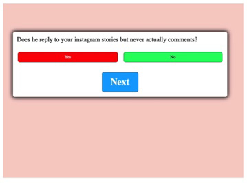
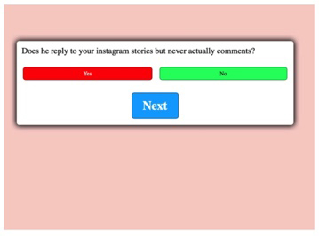

Progress 4 ; Building new prototype
I stumbled across a new prototype idea while rewatching some of the tutorials I had looked at first, one specifically about coding a math quiz for kids to use. I thought I could use a similar concept and method but change and tailor the code to suit a different type of quiz for 'Duckboy'. In the quiz having a set of questions women answer about the guy they're seeing and the quiz tells them whether he is a 'fuckboy or not', using red for 'red flag'/fuckboy, and green for 'all clear'/not a fuckboy. I used a combination of HTML, CSS & JS to create the basic quiz with a couple questions to start me off.
I actually really liked this idea, and was relieved to have got it semi functioning. I was also really happy that it worked. It was not just a prototype made from Adobe XD or another site similar. I remebered Walter mentioning in the lecture how they kind of tricked people into thinking they were a real product when they weren't, they just sort of mimicked a functioning product. I was so proud to have an actual 'quiz' that you could physically play. I spent quite a few days figuring out and getting down the Javascript code, and making sure it all worked well.
 

Progress 5 ; Getting the aesthetics
I worked on getting the aesthetic features of the quiz to make it really the 'Duckboy' style.
I really loved how it looked, it was bold, yet simplistic. I still had lots to figure out, was not too sure how many questions to have in the quiz, and what other features I could add to the overall website to make it more appealing and attractive. Honestly I was just so glad I hadn't messed up the JS, as I had been very prone to making silly mistakes with prior projects using JS in Creative Coding.
Progress 6 ; Creating a mock website to track progress
At this point I had spent so much constant time on the website, just even looking at it, refreshing the page, messing around with colours etc, so I wanted to have a little break so I could go back to it with fresh eyes.
I begun creating this! A website to track my progress in an alternative way to the journal, and as per the brief. I wanted this to be a bit of a 'past', 'look back on' approach rather than it being updates on that day in the present tense like my journal entries were. These were looking back on a prior day, or at the end to summarize that point in time in the assignment. I made the basic website outlook and just copied and pastied my journal entires in place, to then in future go back and read, reflect and rewrite them from a different angle.
Progress 7 ; Mid Point!
At this point I had finished those fundamental features of the website, and was working to try out and add some new techniques and effects to really elvate the design and website as a whole.
I added a couples features that really made my website feel 'put together' and like a real website a girl would use. These being a little tips section, and a forum girls can use to send in their own tips to be added to the website. These social media elements felt important to add as they were a big part of my inital proposal, and although I couldn't truly bring in all the different sections I had invisioned in full, it felt like I was still delivering a part of that.
Progress 8 ; Refining & finishing up
i had recieved some feedback from the lecturer Walter on my website so far. The one piece of advice he gave me was that a couple of the questions in the quiz needed to be simplified slightly just because they were a bit confusing. After looking back on the questions I did find that a couple could be taken/sound differently than I intended them to sound so have made sure all my questions were simple and understandable to anyone. I then checked with a couple of my friends who I'd see as my 'target audience' and they gave the all clear!
The refinement stage was really fun. I perfected all the little details and elements on the website. And added a little user rating tab at the bottom to show an overview of the 'reviews' that had been done on the quiz. Alongside, an average rating of 4.1 stars, and a 85% success rate for finding out if a boy is a 'fuckboy'. This was just to add a little character to the website and that trustworthy and reliable element that would be important for new users in an actual application or website.
An effect I created in my refinement stage that I really love is the glowing effect I added to the bottom text. The glow really just brings all those feminine elements all together and elevates the text. I also ended up adding it to a couple other headings on the page, just to bring that cohesiveness through. A cohesive and consistent design was really important to me. If not, It would just look a bit random all of a sudden at the bottom of the page, having a new and completely different effect on the text. The glow flickers slightly which you would have seen in my presentation video. The flickering glow brings that interactive and satisfying look to engage the viewer's eyes.
Final
My final quiz website prototype is honestly even better than I expected! It's completely different from my initial vision for this project but I'm really pleased with how it's turned out. It's ticks all my boxes in terms of being a physical, usable 'product'/application, it has that 'iconic', feminine, visual style progressed from project 1, and has little bits of each 'part' from my initial proposal - the 'Generator' and those social media elements. There were a few struggles along the way with getting started and getting that properly functioning quiz down, but towards the end I was just met with pretty smooth sailing and got to try out and use new techniques I hadn't tried before. This really is the first big project I've done where I've collaborated learnings from different papers within the Media Design faculty. I definitely developed my understanding and ability with javascript through creating the quiz, this I was introduced to in my previous Creative Coding papers. I feel like I can actually read and understand code and javascript, and am beginning to become more confident in forming functions myself. I was 'umming' and 'ahhh' for a day or so about the background of the website, whether it was too simple being just a nice gradient, and whether it needed more background noise, little details or something else. But I have come to the conclusion that there really is enough on the website. I feel like adding little details to the background, some sort of images or something, wouldn't really bring anything valuable. It would just be distracting and potentially too busy. I looked at other quiz websites, and social websites and found that less was more. I'm happy with the balance of elements on the page, and that each of them have a purpose and bring meaning and depth to the website.